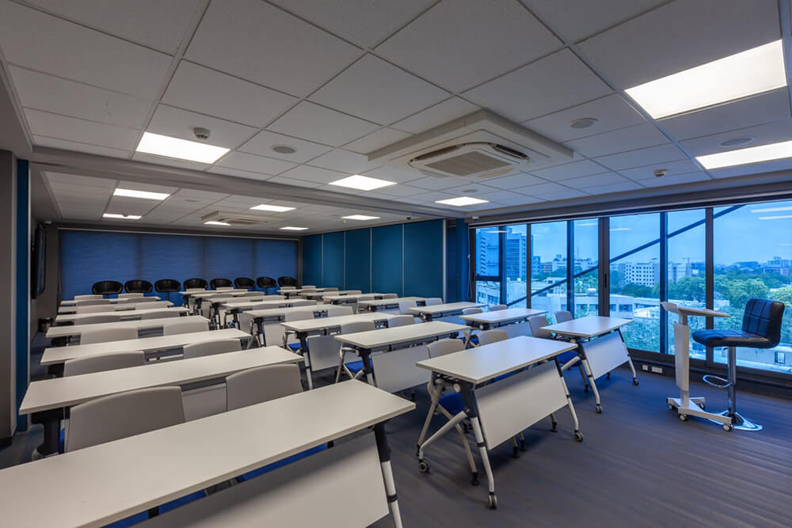

|
JG University is a Tech-Driven University having programmes that evolve as per the future industry demand, thus enabling its students to get into employment or self-employment seamlessly. It is a UGC-approved University sponsored by the ASIA CharitableTrust, which has been in the field of education since 1965, successfully managing 17 colleges and 3 schools. |
 |